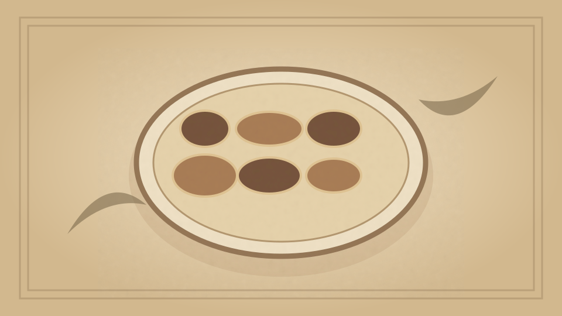

1910 · Fannie Merritt Farmer · FISH
Fish à la Crême
The Boston Cooking-School Cook Book

Historical Recipe
The following text is extracted from the 1910 edition, retaining historical terminology and quantities.
Original Ingredients & Directions
1¾ cups cold flaked fish (cod, haddock, halibut, or cusk)
1 cup White Sauce I
Bit of bay leaf
Sprig of parsley
½ slice onion
Salt and pepper
½ cup buttered cracker crumbs
Scald milk, for the making of White Sauce, with bay leaf, parsley, and onion. Cover the bottom of small buttered platter with one-half of the fish, sprinkle with salt and pepper, and pour over one-half the sauce; repeat. Cover with crumbs, and bake in hot oven until crumbs are brown. Fish à la crême, baked in scallop shells, makes an attractive luncheon dish, or may be served for a fish course at dinner.
Automatically extracted transcription; editorial verification pending. Historical instructions may not meet modern food-safety standards.